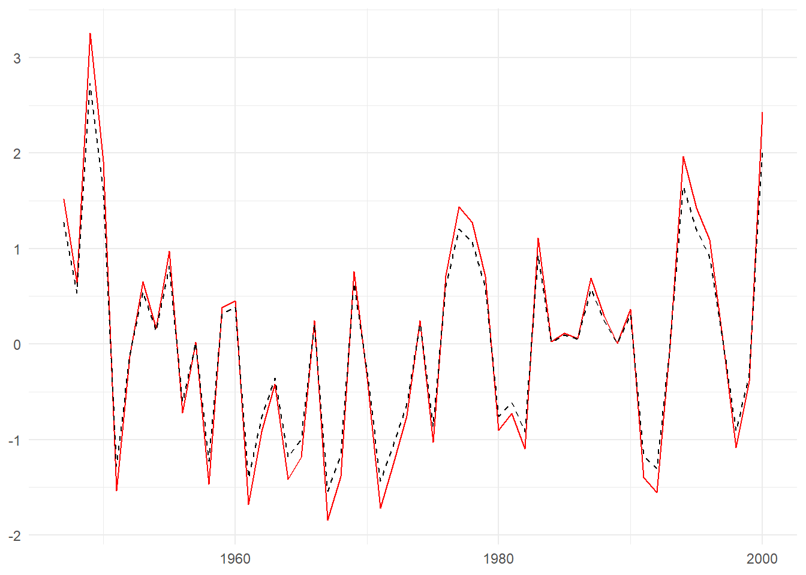
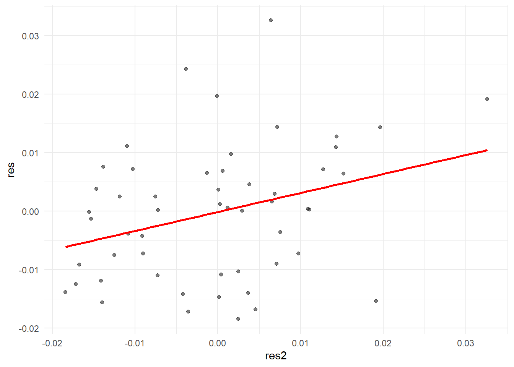
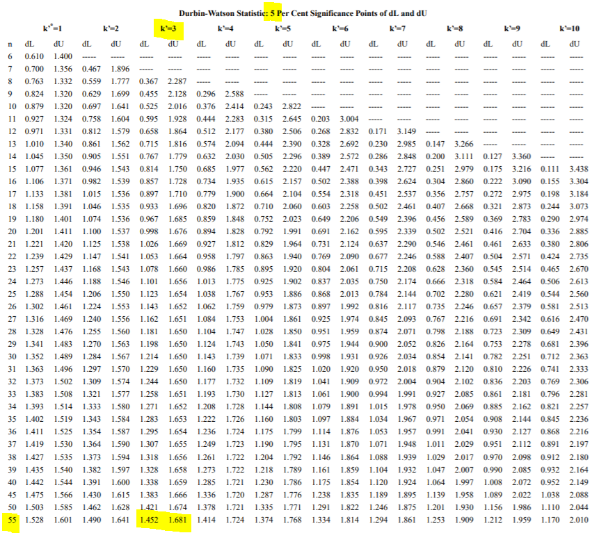

Konu 10 Otokorelasyon
Hata terimleri korelasyonsuzdur. Yani, bir hata teriminin bir önceki ya da geçmiş dönemlerdeki hata terimiyle korelasyonlu olmamasıdır.
Otokorelasyon aşağıdaki nedenler dolayı ortaya çıkabilir.
Dışlanan değişkenler.
Yanlış belirlenen fonksiyon kalıbı.
Ölçme hataları.
Tesadüfi olarak ortaya çıkan savaş, kuraklık gibi olaylar etkilerini ortaya çıktıkları dönemlerden sonra da sürdürebilirler. Bu durum hata terimini etkileyceğinden otokorelasyona neden olabilir.
Otokorelasyon varsa neler olur?
Sıradan En Küçük Kareler tahmincileri yansız ve tutarlı olmayı sürdürecektir. Aynı zamanda tahminciler büyük örneklemlerde normal dağılımlı olmayı da sürdürücektir.
Fakat tahminciler artık etkin olmayacaktır. Çoğu durumda Sıradan En Küçük Kareler standart hataları düşük tahmin edilmiş olacak. Bu, tahmini t değerlerinin şişirilmesidir. Bu ise bir parametrenin gerçekte olması gerekenden daha anlamlı görünmesini sağlayacaktır. Sonuç olarak güven azalacağından t ve F testleri geçerliliğini kaybedebilir (değişen varyansta da aynısı söylemiştik).
setwd("C:/Users/datanerd/Desktop/Github/rEkonometri/data")
df <- read_excel("Table6_1.xls")
df %<>%
dplyr::select(consumption, income, wealth, interest)
str(df)## tibble [54 x 4] (S3: tbl_df/tbl/data.frame)
## $ consumption: num [1:54] 976 998 1025 1091 1107 ...
## $ income : num [1:54] 1035 1090 1096 1193 1227 ...
## $ wealth : num [1:54] 5167 5281 5607 5760 6086 ...
## $ interest : num [1:54] -10.351 -4.72 1.044 0.407 -5.283 ...Bağımlı değişken:
- consumption: Reel tüketim harcamaları
Bağımsız değişken(ler):
income: Reel harcanabilir kişisel gelir
wealth: Reel servet
interest: Reel faiz oranları
df %<>%
mutate(lnconsumption = log(consumption),
lnincome = log(income),
lnwealth = log(wealth)) #interest değişkeni negatif değerler içerdiği için logaritması alınmadı.Modeli kuralım.
##
## Call:
## lm(formula = lnconsumption ~ lnincome + lnwealth + interest,
## data = df)
##
## Residuals:
## Min 1Q Median 3Q Max
## -0.018441 -0.010001 0.000337 0.007039 0.032578
##
## Coefficients:
## Estimate Std. Error t value Pr(>|t|)
## (Intercept) -0.4677110 0.0427781 -10.933 7.33e-15 ***
## lnincome 0.8048729 0.0174979 45.998 < 2e-16 ***
## lnwealth 0.2012700 0.0175926 11.441 1.43e-15 ***
## interest -0.0026891 0.0007619 -3.529 0.000905 ***
## ---
## Signif. codes: 0 '***' 0.001 '**' 0.01 '*' 0.05 '.' 0.1 ' ' 1
##
## Residual standard error: 0.01193 on 50 degrees of freedom
## Multiple R-squared: 0.9996, Adjusted R-squared: 0.9995
## F-statistic: 3.783e+04 on 3 and 50 DF, p-value: < 2.2e-16Klasik doğrusal regresyon modelinin standart varsayımları sağlandığı kabulü altında parametrelerin tamamı istatistiksel olarak anlamlıdır (p değerleri düşük).
Diğer değişkenler sabit tutulduğunda;
income %1 arttığında consumption %0.8 artacaktır.
wealth %1 arttığında %0.2 artacaktır.
interest bir yüzdelik puan (%1 değil) arttığında consumption %0.26 azalacaktır.
Yeri gelmişken belirtelim: Yüzde değişme ile yüzde puanlık değişme aynı şeyler değildir. Örneğin, işsizlik oranı %10 olsun. Bu oran %15’e çıkarsa işsizlik oranında %5 puanlık bir değişme olur. (15 - 10) / 10 ise yüzde değişmedir ki bu da %50’dir.
1’e yakın \(R^2\) sahte korelasyon izlenimi uyandırıyor.
Modelimizde otokorelasyon olup olmadığını kontrol edelim.
Chatfield, bir zaman serisini çizimini yapmadan analiz etmeye çalışan kimse sorun arıyordur der. Biz de testlere geçmeden önce grafik yöntemi ile otokorelasyon kovalayacağız.
Otokorelasyon, hata terimleri arasındaki korelasyon olduğu için hata terimlerini kronolojik olarak grafiğe aktarabiliriz. Grafiğe aktaracağımız şey hata terimleri değil bunların temsilcileridir. Tabi örneklem büyüklüğü arttıkça gerçek değerlere yaklaşabiliriz ama bu veri setinde 54 gözlem bulunmaktadır.
Aşağıdaki şekilde kırmızı düz çizgi kalıntıları temsil ederken; siyah kesikli çizgi kalıntıların regresyonun standart hatasına bölünmüş halidir. Grafikte gösterebilmek için kalıntıları 100 ile çarptık.
df$res <- model$residuals
df$`standartlaştırılmış` <- df$res / summary(model)$sigma
df %>%
mutate(`yıl` = seq(1947, 2000, 1)) %>%
ggplot() +
geom_line(aes(x = `yıl`, y = res * 100, group = 1), color = "red") +
geom_line(aes(x = `yıl`, y = `standartlaştırılmış`, group = 1), linetype = "dashed") +
theme_minimal() +
theme(axis.title = element_blank())
Yukarıdaki inişli-çıkışlı örüntü, korelasyon sergilemektedir. Ne tür bir korelasyon olduğunu görmek için kalıntıları bir dönem gecikmeleri ile serpilme grafiğine aktaracağız.
df$res2 <- lag(df$res)
df %>%
ggplot(aes(x = res2, y = res)) +
geom_point(alpha = 0.5) +
geom_smooth(method = "lm", se = FALSE, color = "red") +
theme_minimal()
Kalıntıların pozitif korelasyonlu olduklarını görüyoruz.
Bu yaptığımız ipucu verse de öznel ya da nitel testtir. Bir de nicel testler bulunmaktadır.
10.1 Durbin-Watson d
d değeri 0-4 arasındadır. 0’a yakınlık pozitif otokorelasyonun kanıtını artırır; 4’e yakınlık negatif otokorelasyonun kanıtını artırır; 2 civarı pozitif ya da negatif otokorelasyon kanıtı yoktur demektir.
## lag Autocorrelation D-W Statistic p-value
## 1 0.2977616 1.289218 0.01
## Alternative hypothesis: rho != 0Kurduğumuz model için d istatistiğini 1.29 bulduk. Peki, nasıl karar vereceğiz?
\(d_L\) alt sınır; \(d_U\) ise üst sınır olmak üzere eğer;
d < \(d_L\) ise pozitif otokorelasyonun muhtemel kanıtı vardır.
d > \(d_U\) ise pozitif otokorelasyonun muhtemel kanıtı yoktur.
\(d_L\) < d < \(d_U\) ise pozitif otokorelasyon ile ilgili kesin bir sonuca varılamaz.
\(d_U\) < d < 4 – \(d_U\) ise pozitif ya da negatif otokorelasyonun muhtemel kanıtı yoktur.
4 – \(d_U\) < d < 4 – \(d_L\) ise negatif otokorelasyonla ilgili kesin bir sonuca varılamaz.
4 – \(d_L\) < d < 4 ise negatif otokorelasyonun muhtemel kanıtı vardır.
Tablo değerlerine buradan ulaşabilirsiniz. n’i 54 alıyoruz ama tabloda n = 55 alınabilir. k ise bağımsız değişken sayısıdır ki bu da 3’tür. %5 için d değerleri 1.452 ve 1.681’dir.

Hesapladığımız d değeri 1.29 idi. Bu da alt sınıra yakın demektir. d < \(d_L\) için pozitif otokorelasyonun muhtemel kanıtı vardır demiştik. Grafik ile de aynı sonuca ulaşmıştık.
Tabi d istatistiğinin varsayımlarını atlamamak gerekiyor:
Regresyon modeli kesme terimi içerecek.
Yinelenen örneklemlerde bağımsız değişkenler sabit olacak (hata teriminden bağımsızlık).
Hata terimi birinci dereceden otoregresif olacak. Yani, bugünkü hata terimi ile bir önceki hata terimi.
Hata terimi normal dağılımlı olacak.
Bağımsız değişkenler bağımlı değişkenin gecikmeli değerlerini içermeyecek.
Durbin-Watson d testini kullanamadığımız bir durum vardır. Eğer bu modeli otoregresif model yaparsak; yani, modelde bağımsız değişkenlerden bir tanesi bağımlı değişkenin gecikmeli değerini içeriyorsa bu test kullanılamaz.
10.2 Breusch-Godfrey
Bu test ile az önce gördüğümüz testin kısıtlarından kurtulacağız. Bu test ile bağımlı değişkenlerin gecikmeli değerleri bağımsız değişkenlere dahil edilebilecek, daha yüksek mertebeli otoregresifler olabilecek, hata teriminin hareketli ortalama terimlerine imkan tanınabilecek.
Testteki ilk adım Sıradan En Küçük Kareler ile modeli oluşturmak ve kalıntıları bulmaktır. Ardından bu kalıntıların bağımsız değişkenler ile otoregresif terimlere göre regresyonu alınır. Büyük örneklemde \(\chi^2\) dağılımı izler (alternatif olarak F değeri kullanılabilir). \(\chi^2\) değeri belirlenen anlamlılık düzeyindeki kritik değeri aşıyorsa \(H_0\) reddedilir. Bu red de otokorelasyonun varlığına işaret eder. Aynı yorum F için de geçerlidir. p değeri düşükse \(H_0\)’ı reddedebiliriz.
##
## Breusch-Godfrey test for serial correlation of order up to 1
##
## data: model
## LM test = 5.3462, df1 = 1, df2 = 49, p-value = 0.02501Sadece bir gecikmeli değer aldık ve F ve \(\chi^2\) için ayrı ayrı gösterdik. p değerleri düşük olması \(H_0\)’ın reddi olup otokorelasyonun varlığına işarettir. Buna ikinci ve üçüncü derecede de bakılabilir.
##
## Breusch-Godfrey test for serial correlation of order up to 2
##
## data: model
## LM test = 3.2541, df1 = 2, df2 = 48, p-value = 0.04728##
## Breusch-Godfrey test for serial correlation of order up to 2
##
## data: model
## LM test = 6.4476, df = 2, p-value = 0.0398##
## Breusch-Godfrey test for serial correlation of order up to 3
##
## data: model
## LM test = 2.2032, df1 = 3, df2 = 47, p-value = 0.1001##
## Breusch-Godfrey test for serial correlation of order up to 3
##
## data: model
## LM test = 6.6577, df = 3, p-value = 0.08365İkinci dereceden otoregresifin de istatistiksel olarak anlamlı çıkacağı görülecektir. Bu da ikinci dereceden otoregresif hata yapısının model için daha uygun olduğunu söyler.
Breusch-Godfrey aşağıdaki özelliklere sahiptir:
Test, bağımsız değişken değerleri ile hata teriminin gecikmeli değerleri verildiğinde hata teriminin sabit varyanslı olduğunu varsayar.
Testin uygulanmasında pratik bir sorun gecikmeli hata terimlerinin sayısının seçimidir. Bu, zaman serisinin türüne bağlı olabilmektedir. Aylık: 11, çeyrek: 3, yıllık: 1 yeterli olabilir.
Otokorelasyonun varlığını ortaya koyduk. Düzeltmek için neler yapabiliriz?
Birinci fark ya da genelleştirilmiş dönüşüm gibi yöntemler kullanılabilir. Bunlar deneme-yanılma yöntemleridir. Biz düzeltici önlem olarak Newey-West’in Sıradan En Küçük Kareler standart hatalarını düzeltme yöntemini göreceğiz.
10.3 HAC Yöntemi
Buradaki şart örneklemin büyük olmasıdır. Bu yöntem ile düzeltilen standart hatalar değişen varyans ve otokorelasyon tutarlı standart hatalar (heteroskedasticity and autocorrelation consistent, hac) olarak da bilinir. Genel anlamda, eğer otokorelasyon varsa hac standart hatalarının her zamanki Sıradan En Küçük Kareler standart hatalarından daha büyük olduğu bulunmuştur.
##
## t test of coefficients:
##
## Estimate Std. Error t value Pr(>|t|)
## (Intercept) -0.46771100 0.04440193 -10.5336 2.716e-14 ***
## lnincome 0.80487293 0.01621446 49.6392 < 2.2e-16 ***
## lnwealth 0.20126996 0.01452512 13.8567 < 2.2e-16 ***
## interest -0.00268906 0.00082005 -3.2791 0.0019 **
## ---
## Signif. codes: 0 '***' 0.001 '**' 0.01 '*' 0.05 '.' 0.1 ' ' 1Hac yöntemi sadece standart hataları ve dolayısıyla t istatistiklerini ve p değerlerini değiştirir.
Eğer ilk kurduğumuz model ile karşılaştırırsak aralarında önemli bir fark olmadığını göreceğiz. Bu durum değişik otokorelasyon sınamalarına dayanan otokorelasyon kanıtlarına rağmen otokorelasyon sorununun çok ciddi görünmediğini ortaya koyar.
Eğer örneklem genişliği yeterince büyükse, otokorelasyon yapısıyla ilgili herhangi bir özel bilgi gerektirmeyen robust standart hataları ya da hac standart hatalarını kullanabiliriz.